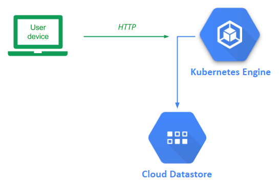
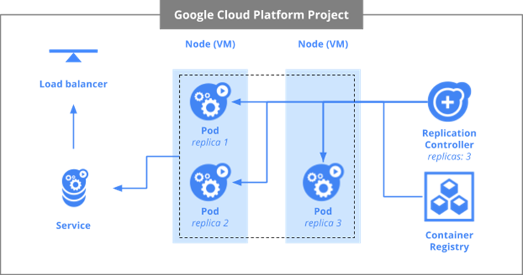
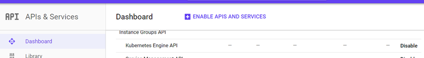
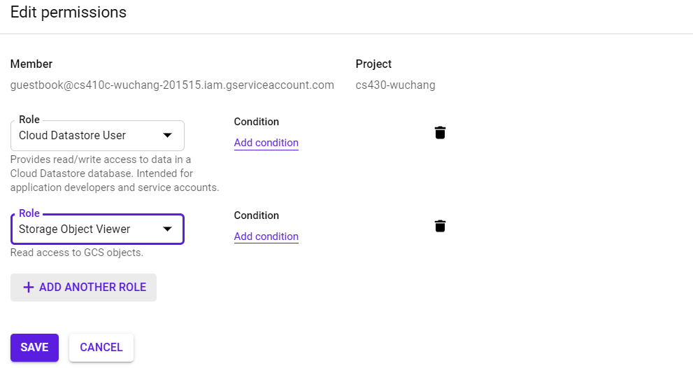
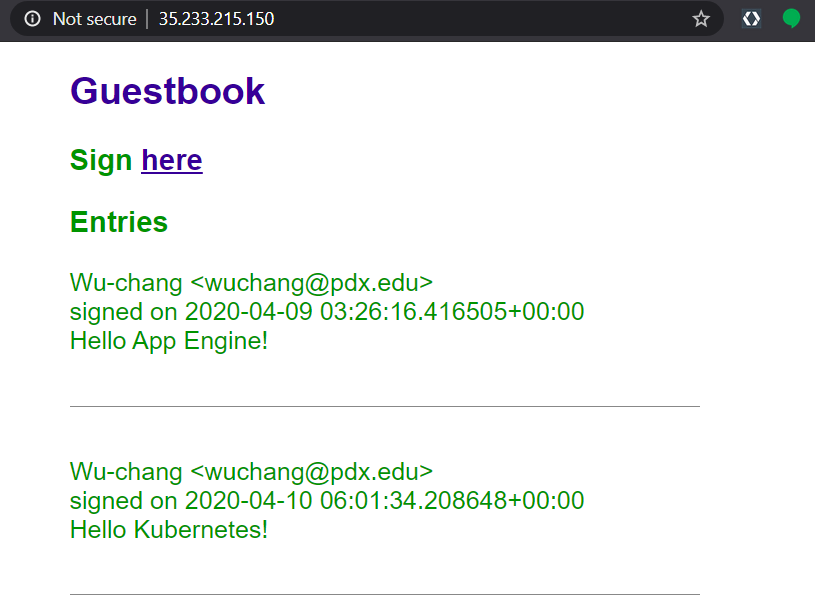
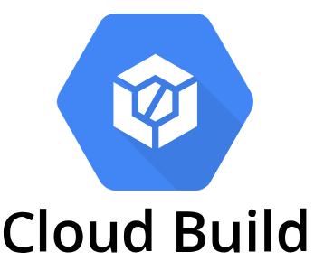

With containers being used prevalently in projects, it has become increasingly complex for organizations to manage deployments. Kubernetes is an open-source container orchestration platform that allows one to easily manage the deployment, execution, scaling, and management of containers. One can consider Kubernetes as a way for developers to build their own, custom, serverless platform that they can control.
While one could set up and run Kubernetes locally, Google Cloud provides a hosted Kubernetes service that can be used instead (Kubernetes Engine). In this lab, we will deploy our guestbook application using Kubernetes.
Before we begin, some terminology is helpful. In Kubernetes, the virtual machines used in a Kubernetes deployment are called nodes. Collections of related containers are placed in a single unit called a pod. FInally, multiple replicas of a pod are created and then deployed onto nodes. For this lab, we have a single container in each pod and will create 3 replicas of the pods to deploy onto our 2 nodes as shown below.

We'll first enable the services we need for the project. Open Cloud Shell and issue the following two commands to enable API access to Kubernetes Engine and Compute Engine.
gcloud services enable container.googleapis.com gcloud services enable compute.googleapis.com
This is equivalent to enabling them in API & Services

With Kubernetes, you allocate the cluster of Compute Engine nodes you wish to use to run your application. This is done via programmatic access to the Compute Engine API. One of the configurations Compute Engine requires is the location that the cluster of nodes will reside in. First, list the zones that are available to you:
gcloud compute zones list
While any of these zones work, let's use one of the ones that is nearest to us (The Dalles, OR).
gcloud config set compute/zone us-west1-b
View that the zone has been configured by listing the configuration.
gcloud config list
We will now create the cluster of machines that will run our Guestbook container. Before doing so, however, we need to consider the privileges that are required by the nodes in the cluster so we can assign them a service account with appropriate permissions.
Like previous labs, we require access to Cloud Datastore User to read and write the backend database. In addition to this, each node must also be able to pull the Guestbook container image that we will be placing in the Artifact Registry. As we have seen earlier, storage of container images is done via Cloud Storage buckets. Thus, the service account we need to associate with each node of the Kubernetes cluster should have both Datastore User and Storage Object Viewer roles.
We have already created a service account from the initial Cloud Datastore lab that has the Cloud Datastore User role attached to it (guestbook@${GOOGLE_CLOUD_PROJECT}.iam.gserviceaccount.com). Rather than create a new service account, we can simply add the Storage Object Viewer role to the service account above. To do so, visit IAM from the web console, locate the service account, click on the pencil icon to edit it, then click on "Add Another Role", and select the role. Then, click on Save.

Within Cloud Shell, this may also be done with the following:
gcloud projects add-iam-policy-binding ${GOOGLE_CLOUD_PROJECT} \
--member serviceAccount:guestbook@${GOOGLE_CLOUD_PROJECT}.iam.gserviceaccount.com \
--role roles/storage.objectViewerWe now have everything we need to create the cluster of machines that will run our Guestbook container. In Cloud Shell, execute the command below to create a cluster named 'guestbook' with 2 nodes in us-west1-b using the service account configured in the previous step.
gcloud container clusters create guestbook \
--num-nodes 2 \
--zone us-west1-b \
--service-account guestbook@${GOOGLE_CLOUD_PROJECT}.iam.gserviceaccount.com
Go to Compute Engine and navigate around to answer the following questions in your lab notebook:
We wish for subsequent Kubernetes commands that we issue to use this cluster. To make this happen, we set the default cluster for the kubectl command via the command below:
gcloud config set container/cluster guestbook
Bring up Cloud Shell and go back to the source directory for the application that was used in the initial Cloud Datastore Guestbook codelab.
cd cs430-src/05_gcp_datastore
In the Cloud Run lab, we built the container using the Cloud Build service and had it automatically upload it to the Artifact Registry. Another option would be to build the container within Cloud Shell and upload it to the Artifact Registry manually. To do so, first configure Docker so it can use the Artifact Registry.
gcloud auth configure-docker
Then, build the container from the Dockerfile and source code in the directory. Register it with a Google Artifact Registry name.
docker build -t gcr.io/${GOOGLE_CLOUD_PROJECT}/gcp_gb .
Push the container image to the Artifact Registry
docker push gcr.io/${GOOGLE_CLOUD_PROJECT}/gcp_gb
Visit the Artifact Registry UI and navigate to its container images section.
Kubernetes takes a declarative description of the infrastructure you want to spin up and automatically launches it. In addition, it continually monitors and maintains the infrastructure so that it adheres to the specification. The configuration is done via a YAML file. In this case, we use kubernetes.yaml to specify our deployment. The first part of the file that specifies the pods to be deployed is shown below. The file configures the following:
gcr.io/YOUR_PROJECT_ID/gcp_gbapiVersion: v1
kind: ReplicationController
metadata:
name: guestbook-replicas
spec:
replicas: 3
template:
metadata:
labels:
app: guestbook
tier: frontend
spec:
containers:
- name: guestbook-app
image: gcr.io/YOUR_PROJECT_ID/gcp_gb
env:
- name: PROCESSES
value: guestbook
- name: PORT
value: "8000"
ports:
- containerPort: 8000The second part of the file is shown below. Each Kubernetes deployment must specify a service that is exported. In this case, we specify that we want a load balancer that can be reached on port 80 to map requests to the containers' port 8000. This allows one to have a single point of access to the Guestbook application that is used to direct traffic to any of the replicas.
apiVersion: v1
kind: Service
metadata:
name: guestbook-lb
labels:
app: guestbook
tier: frontend
spec:
type: LoadBalancer
ports:
- port: 80
targetPort: 8000
selector:
app: guestbook
tier: frontendIn order for Kubernetes to run commands against our cluster, we must first obtain credentials from it.
gcloud container clusters get-credentials guestbook --zone us-west1-b
Then, use the Kubernetes command kubectl to instruct Kubernetes Engine to deploy the configuration on the cluster.
kubectl create -f kubernetes.yaml
Note that, although all containers run on Compute Engine instances, the configuration file is portable and can run on any other cloud provider, locally on a laptop, on a private cloud, or even a hybrid cloud. Run the following command to get the status of the pods running in the cluster.
kubectl get pods
Then, find the service that is exported from the deployment.
kubectl get services
Bring up the LoadBalancer's external IP address in a web browser to view the application. You will be hitting one of the 3 replicas, but not know which one. It doesn't matter since each container is stateless, writing out entries to the shared, backend Datastore.
Enter a message using your name, PSU e-mail address, and the message "Hello Kubernetes!".
Kubernetes has deployed a number of resources across your cloud project. It's important to understand what they are. Visit Kubernetes Engine via the web console and view the "Workloads" placed on your cluster. Click on the guestbook-replicas.
The service exposed is of type "Load balancer". Visit "Network services" and its "Load balancing" UI.
The load balancer and the replicas each have external IP addresses assigned to them. Visit "VPC network" and its "IP addresses" UI.
The power of an "Infrastructure as Code" deployment such as Kubernetes is that it allows us to automate the deployment of complex infrastructure in a repeatable manner.
Bring down the Kubernetes deployment through Kubernetes Engine via the web console or by command-line by executing the following command:
kubectl delete -f kubernetes.yaml
Then, delete the container image created
gcloud container images delete gcr.io/${GOOGLE_CLOUD_PROJECT}/gcp_gb
Keep the Kubernetes cluster running.

In the previous steps, we have seen how Kubernetes has largely automated the deployment of the guestbook application onto a cluster. In order to do so, however, we had to manually build the guestbook container and push it into the artifact registry. In CI/CD (continuous integration, continuous delivery/deployment) pipelines, it is often helpful to automate the entire workflow.
To demonstrate this, we will demonstrate how build automation and deployment can be used together to update a running application via a single trigger. To allow Cloud Build the ability to both build artifacts and deploy them onto our Kubernetes cluster, we'll first need to attach a permission policy to the service account Cloud Build utilizes to manage deployments. The service account is derived from the project's number. In Cloud Shell, use the following command to set an environment variable with it. Ensure it returns the project's number.
GOOGLE_CLOUD_PROJECT_NUMBER=$(gcloud projects describe $GOOGLE_CLOUD_PROJECT --format="value(projectNumber)")
echo $GOOGLE_CLOUD_PROJECT_NUMBERThen, attach the permission policy that allows Cloud Build the ability to manage and maintain containers.
gcloud projects add-iam-policy-binding ${GOOGLE_CLOUD_PROJECT} \
--member serviceAccount:${GOOGLE_CLOUD_PROJECT_NUMBER}@cloudbuild.gserviceaccount.com \
--role=roles/container.developerIn Cloud Shell, return to the source directory for the application.
cd cs430-src/05_gcp_datastore
Within the directory, create the cloudbuild.yaml file below which specifies a sequence of steps that will be taken to build and push the container image as well as deploy the application. Fill in YOUR_PROJECT_ID with your GOOGLE_CLOUD_PROJECT in the file as indicated. This file is the cloud's equivalent to a Makefile.
steps: # Build the container image - name: 'gcr.io/cloud-builders/docker' args: [ 'build', '-t', 'gcr.io/
YOUR_PROJECT_ID/gcp_gb', '.' ] # Push the container image - name: 'gcr.io/cloud-builders/docker' args: [ 'push', 'gcr.io/
YOUR_PROJECT_ID/gcp_gb']
# Deploy the container image to gke
- name: 'gcr.io/cloud-builders/gke-deploy'
args:
- run
- --filename=kubernetes.yaml
- --image=gcr.io/
YOUR_PROJECT_ID/gcp_gb
- --location=us-west1-b
- --cluster=guestbook
While the steps outlined in the previous step can be triggered on a number of events such as a new version of the source code being committed to a repository, for simplicity, we will invoke the steps from the command line in order to automatically build and deploy our application. Invoke the entire build process using the command below:
gcloud builds submit --config=cloudbuild.yaml
Then, as before, examine the service that has been deployed by finding the external IP address of the load balancer and visiting it in the browser. Enter a message using your name, PSU e-mail address, and the message "Hello Cloud Build!".
As before, bring down the Kubernetes deployment and delete the container image created
kubectl delete -f kubernetes.yaml
gcloud container images delete gcr.io/${GOOGLE_CLOUD_PROJECT}/gcp_gb
Then, delete the Kubernetes cluster
gcloud container clusters delete guestbook --zone us-west1-b